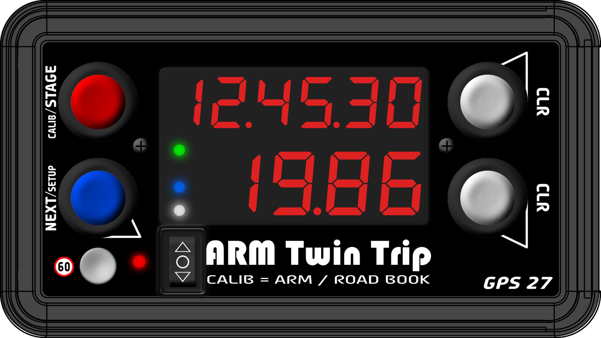
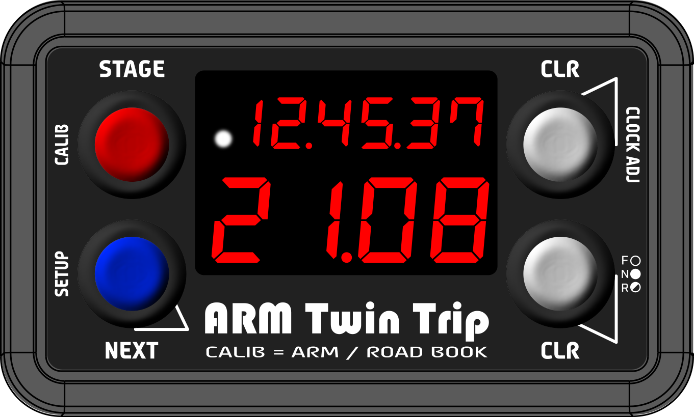
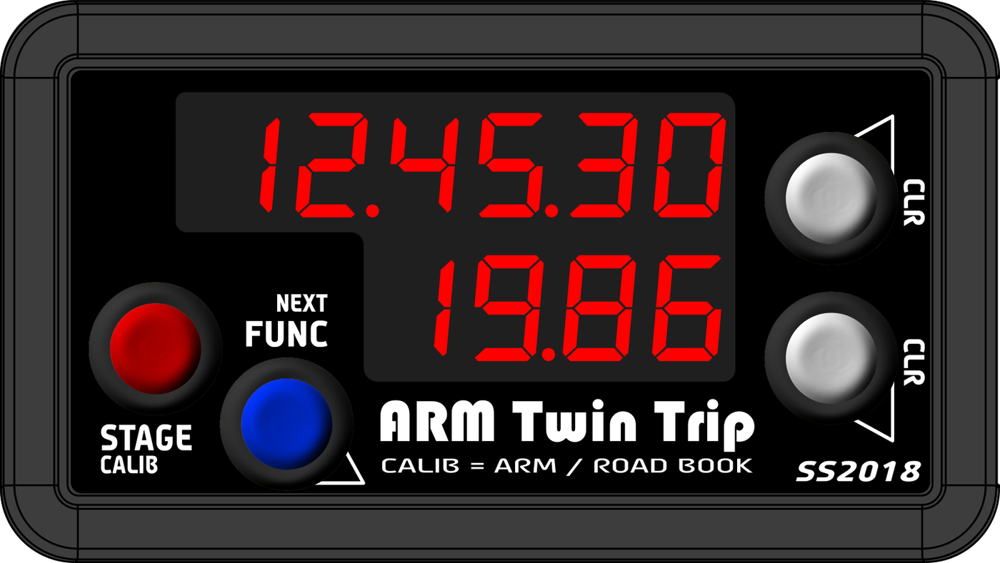
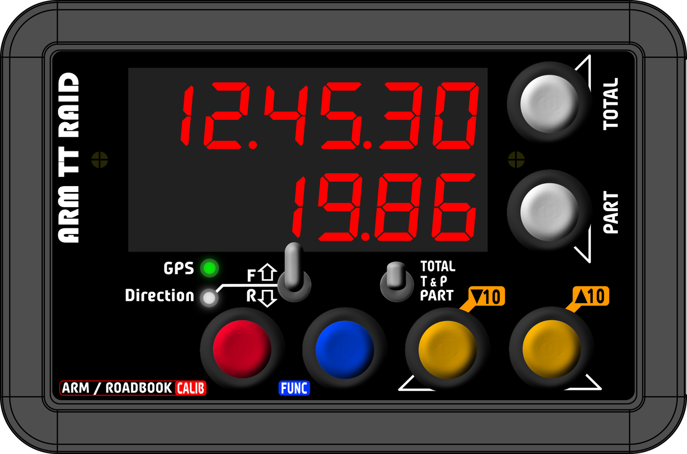
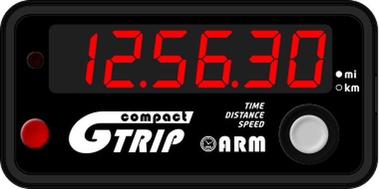
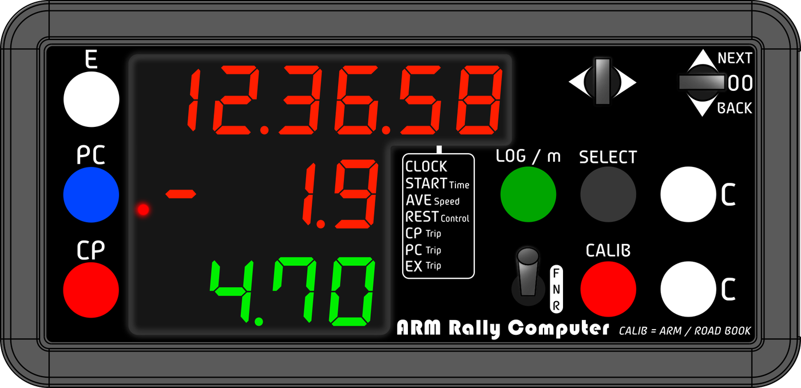
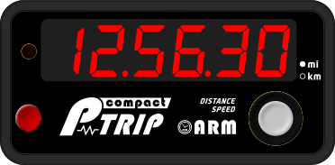

ARM products の各製品の取扱説明書です。Web で読むか、PDF をダウンロードしてください。User manuals for ARM products. Read them online or download the PDF.



車速信号式ラリートリップメーター（ベストセラー）Speed-signal rally tripmeter (best seller)

GPS ラリーレイド用トリップメーターGPS tripmeter for rally raid



コンパクト車速パルス式トリップメーターCompact speed-pulse tripmeter
2027 年初めに発売予定。取扱説明書は発売時に公開します。Launching early 2027. The manual will be published at launch.
GPS 版アベレージラリー用ラリーコンピューターGPS version of the regularity rally computer
取扱説明書は発売時に公開します。The manual will be published at launch.